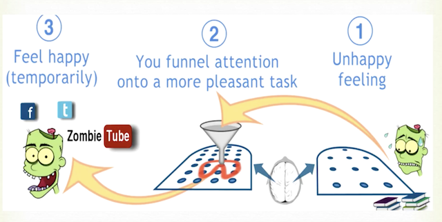
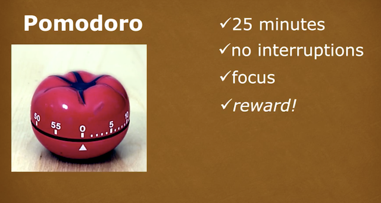

Learning How to Learn Part 1
September 9, 2017
Recently I decided to take a popular course on Coursera : Learning how to learn.
Motivation
I had been trying to go over deep learning course on fast.ai and somehow I was not making progress and hence started to procrastinate. In retrospect there are a few reasons I can think of, as to why I gave up on the course(for the time being) :
- I decided to deep dive into it and thought that I can do a quick glance of the course in a few weeks whereas the recommended time to finish the course is 3 months.
- I watched 2 videos (out of 7) along with the homework in 4 days but realized that I was not retaining much knowledge.
- The python libraries that were used in the first 2 lectures seemed like magic to me. The professor did mention that what these libraries were doing will be studied in detail later on, but I did not have the patience and started to learn about them, taking on more work.
Hence I was overwhelmed and there being no pressing need to for me to learn about deep learning, I started to look at other interesting things to do.
That is when I found out about the learning how to learn course. The timing seemed pretty apt so I decided I would take the course. The takeaways I was looking for were exactly what the course title suggests : learning how to learn new subjects.
As I am taking the course I will outline my notes here. This post consists of the notes from week 1 of the course.
Learning how to learn
Week 1
Focused and diffused modes
- Analogies help a lot while learning. Associations to existing concepts is helpful.
- Mind works in focussed and diffused modes.
- Work in focused mode for some time and then in diffused mode.
- Let your mind run free for some time.
Procrastination

Pomodoro

- Similar to intense workout followed by relaxation.
Practice makes perfection
- When you first see a solution to a problem, the neural pattern of the solution in your brain(though present) is weak.
- When you solve the problem the second time on your own, without looking at the solution, the neural pattern becomes stronger.
Introduction to memory
- Two types of memory : long term memory and working memory.
- Working memory : Related to what you are working right now.
- Repetition is sometimes needed to keep stuff in working memory, until we have a chance to write the content down.
- Longterm memory
- Store fundamental concepts about various subjects.
- Spaced repetition :
- Repeat the thing you are trying to learn over several days.
- Don’t try to repeat one thing 10 times in one day. Span it across days.
Few extra points
- Learn by active engagement rather than passive listening.
- Reading tutorials is a good starting point but learning by doing is important.
- Success does not come alone with smartness.
- Common qualities amongst successful people are persistence and being passionate about the work they do.